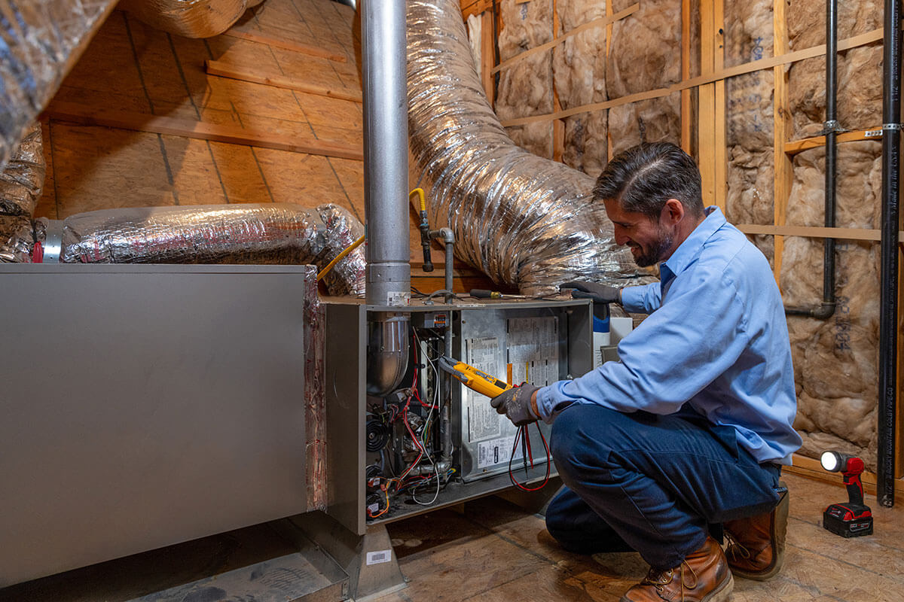

Heating
We can handle all of your Heating needs from repairs to replacement and even maintenance.
Regular furnace service is essential for maintaining optimal performance, safety, and longevity of your heating system. Over time, dust and debris can accumulate, hindering efficiency and increasing energy consumption. Routine maintenance not only ensures that your furnace operates at peak efficiency, reducing energy bills, but it also addresses potential safety hazards such as gas or carbon monoxide leaks. By identifying and resolving minor issues early on, regular servicing helps prevent major breakdowns, saving you from costly emergency repairs and extending the lifespan of your furnace. Moreover, adherence to maintenance schedules often fulfills warranty requirements, protecting your investment. Ultimately, the proactive approach of regular furnace service contributes to a comfortable, safe, and energy-efficient home environment, promoting both cost savings and environmental sustainability.